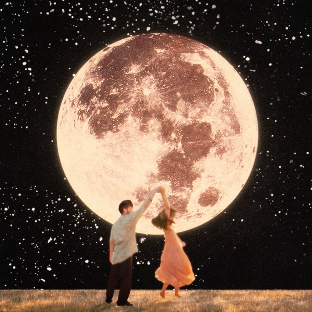

O que é a arte?
A arte é uma forma de expressão humana. Por onde é transmitido emoções, ideias e visões ao redor. É um método que se manifesta culturalmente de maneiras abrangentes! Como por exemplo:
Pinturas:

Pintura de Van Gogh - Noite Estrelada Sobre o Ródano - 1889
Música:
Música do cantor Alex Warren - You'll Be Alright, Kid
Anime:

Anime produzido por Eiichiro Oda - One Piece - 20 Out. 1999
Além disso a arte pode ter como intuito a manifestação da beleza, comunicação, reflexão ou a transformação social. A arte é muito subjetiva! De um só movimento artistico podem se tirar milhares de reflexões uma diferente da outra! Além disso, a arte tem um papel muito importante no nosso meio de convivio, ela é essencial para que haja a expressão de diferentes perspectivas.